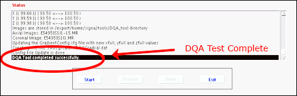
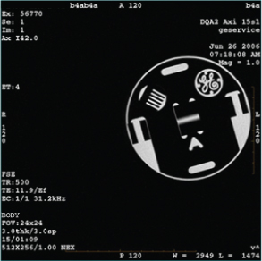

- 00000018WIA30FCEE20GYZ
- id_131065506.0
- Nov 2, 2021 1:12:36 PM
DQA II tool and troubleshooting
If problems are encountered while using the Daily Quality Assurance (DQA) calibration procedure, refer to the following guidelines for troubleshooting.
| Required persons | Preliminary requirements | Procedure | Finalization |
|---|---|---|---|
| 1 | Not Applicable | 30 (varies) minutes | 10 minutes |
| Item | Quantity | Effectivity | Part number | Manufacturer |
|---|---|---|---|---|
| DQA III Phantom | 1 | - |
2321556 | - |
| DQA Phantom Positioner | 1 | - |
5554497 | - |
| Condition | Reference | Effectivity |
|---|---|---|
| Laser light alignment completed. | - | - |
| DC Offset is performed. | - | - |
The DQA II tool determines proper gradient polarity (positive to positive and negative to negative) and proper gradient wiring (X amp drives X coil, Y amp drives Y coil, Z amp drives Z coil) by scanning a series of axial and coronal images of the DQA III phantom. The tool also verifies that the proper phantom is being used. After proper gradient orientation is confirmed, the tool adjusts for Z isocenter and gradient calibration. If Z iso adjustments or gradient calibration adjustments are required, the DQA II tool performs the appropriate iterations to complete. Therefore, the DQA II tool time to complete may vary.
Running DQA II tool
-
Place the DQA III phantom on the Table.Notice 
- Place phantom positioner onto the hollow for HNU. R/L direction will be fit to the hollow.
- Push phantom positioner toward the magnet until the two bottom bars reach the end of hollow.
- Place DQA III phantom onto the phantom positioner and verify its orientation and levelness.
- Landmark on the center line of the DQA III phantom. The laser must be in the middle of the black circumferential line on the phantom. Press Advance to Scan button.
Figure 1. Phantom positioning on table 
- Start the DQA II tool:
- (For proprietary mode) On the Common Service Desktop, select Calibration Wizard from the Calibration menu, then Click here to start this tool.
After the Calibration Wizard starts, select DQA from the menu. Review and approve the pre and post-dependencies, then select Click here to start this tool to start the procedure.
- (For non-proprietary mode) From the Common Service Desktop, select DQA Calibration from the Calibration menu, then select DQA.
- (For proprietary mode) On the Common Service Desktop, select Calibration Wizard from the Calibration menu, then Click here to start this tool.
- In the new window that displays, click Start.
All phantom images acquired during the DQA II tool can be viewed in the browser. View these images if problems occur.
To stop the DQA II tool without restarting it, click Abort at any time.
- As the DQA II tool progresses, the status displays in the Progress area. If problems are encountered, they display in the Actions Required area.
Figure 2. DQA screen with actions required  Note: After resolving the issues in the Actions Required section, to restart the DQA II tool, click Restart.
Note: After resolving the issues in the Actions Required section, to restart the DQA II tool, click Restart. - After the tool successfully completes its tasks, click Exit.
Figure 3. Successful Test 
Troubleshooting
- Diagnose the type of error, then use the figure and table below to determine recommended solutions.
Figure 4. Gradient direction conventions used with DQA II error messages 
Table 4. Potential DQA II tool test errors Symptom in DQA II Tool Actions Required Window Recommendations One or more gradients appear not to be functioning at all. Verify that the system can properly scan Body images. Refer to Reviewing DQA II images for verification of proper body scan for proper images. Z gradient coil appears to be driven by the wrong gradient input. or
X and Y gradient coil inputs appear to be swapped.
or
X and Y gradient polarities appear to be inverted.
or
X gradient polarity appears to be inverted.
or
Y gradient polarity appears to be inverted.
- Check coil type, phantom type, positioning, coil latches/clamps, landmarking, etc. If an issue is found, correct it, and rerun the DQA II tool.
- Review the most recent DQA exam using the image browser.
After reviewing the images, if corrective action is required to resolve assorted issues, refer to Reviewing DQA II images for verification of proper body scan.
Z gradient polarity appears to be inverted. - Check coil type, phantom type, positioning, coil latches/clamps, landmarking, etc. If an issue is found, correct it, and rerun the DQA II tool.
- Review the most recent DQA exam via the image browser. Take action based on the condition that follows:
- If the latest exam has its image labeled Coronal, check to see if that image looks like the coronal sample image (regarding shape and position of phantom features) shown in Figure 6.
- If the image looks like the coronal example (even if degraded via low SNR, ghosting, distortion, etc.), suboptimal image quality may have confused the DQA II tool, and the image quality issues must be resolved before running DQA II calibration.
- If the acquired coronal image does not look like the coronal image example, there is probably a gradient wiring/setup problem. Proceed to the next step.
- If the latest exam has its image(s) labeled Axial, the tool has made an early detection of a Z gradient polarity problem from the set of multi-slice images. Check to see if the central bar feature (arrow in Figure 5) moves toward the resolution comb feature as the slice location moves from inferior to superior.
- If the bar moves toward the resolution comb feature, the Z gradient is probably polarity flipped. Proceed to the next step.
- If the bar moves away from the resolution comb feature, the suboptimal image quality may have confused the DQA II tool and the image quality issues must be resolved before running DQA II calibration.
- If the latest exam has its image labeled Coronal, check to see if that image looks like the coronal sample image (regarding shape and position of phantom features) shown in Figure 6.
- If the error is attributed to Gradient cabling, refer to SIGNA Pioneer 3.0T Installation manual (Direction 5680004-1EN:), Gradient Cable Installation.
Phantom used appears to be wrong and/or severely mispositioned. - Check coil type, phantom type, positioning, coil latches/clamps, landmarking, etc. If an issue is found, correct it, and rerun the DQA II tool.
- Verify that the phantom is approximately in the center of the bore when scanning by visually checking its position.
Phantom is offset more than ±36 mm along Z. - Check coil type, phantom type, positioning, coil latches/clamps, landmarking, etc. If an issue is found, correct it, and rerun the DQA II tool.
- Check Laser Light Alignment. Make sure the axial alignment light is aimed straight down and lines up with the crosshairs on the DQA III phantom.
- Check that the isocenter Z value is close to the default for the magnet type. Verify that the proper magnet and magnet cover options are properly set in the MR config file.
Phantom appears to be rotated 16 degrees about the physical Z axis. - Check coil type, phantom type, positioning, coil latches/clamps, landmarking, etc. If an issue is found, correct it, and rerun the DQA II tool.
- Visually inspect phantom positioning. Verify that the phantom is not rotated. A positive rotation value indicates that the phantom is rotated counterclockwise around the Z axis. The phantom needs to be rotated clockwise to correct the situation. Do not misalign the phantom when repositioning.
- If a positive value is observed for phantom rotation about the physical Z axis, rotate the phantom clockwise in the XY plane when viewing from the front of the magnet. Do not misalign the phantom when repositioning. See Figure 7.
Phantom center appears to be offset 20 mm along physical X. - Check coil type, phantom type, positioning, coil latches/clamps, landmarking, etc. If an issue is found, correct it, and rerun the DQA II tool.
- Verify that the phantom is not offset along physical X.
- If a positive value is observed for phantom position in X direction, move the phantom to the left (when viewing from the front). Do not misalign the phantom when repositioning. See Figure 7.
Phantom center appears to be offset 20 mm along physical Y. - Check coil type, phantom type, positioning, coil latches/clamps, landmarking, etc. If an issue is found, correct it, and rerun the DQA II tool.
- Verify that the phantom is not offset along physical Y.
- If a positive value is observed for phantom position in Y direction, move the phantom down (when viewing from the front). Do not misalign the phantom when repositioning. See Figure 7.
Phantom appears to be rotated 16 degrees about the physical Y axis. - Check coil type, phantom type, positioning, coil latches/clamps, landmarking, etc. If an issue is found, correct it, and rerun the DQA II tool.
- Visually inspect phantom positioning. Verify that the phantom is not rotated.
- If a positive value is observed for phantom rotation about the physical Y axis, rotate the phantom clockwise in the XZ plane when viewing the phantom from above the table. Do not misalign the phantom when repositioning.
- Review images to verify proper Body scan.
Reviewing DQA II images for verification of proper body scan
- The latest exam has images labeled Axial (Coronal) and at least one of those images looks like (regarding the shapes and positions of phantom features) the axial (coronal) example image shown in this section.
- The acquired axial (coronal) image looks like the axial (coronal) example shown in this section (even if degraded by low SNR, ghosting, distortion, etc.).
If the axial (coronal) image does not look like the axial (coronal) image example in this section, a gradient wiring/setup problem exists. See the Gradient Cable Installation section of the applicable installation manual.
- Open the browser.
- Review the last exam.
The DQA II tool scans both axial and coronal images. Each scan has its own separate exam. The images to target for review (if needed) are those from the most recent DQA II related exam.
Figure 5. Example Axial Image at Isocenter, Post-Calibration 
Figure 6. Example Coronal Image 
Example Image of Rotated, Offset Phantom

Finalization
- Remove service equipment and phantom.
- If this procedure was done as a standalone procedure, perform a SaveInfo to save the newly created isovector and gradient calibrations. Otherwise, continue with regular system calibrations.